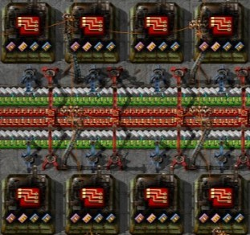

Third stage
The different parts
Advancing to Later Sciences:
As players progress into the intermediate stage, they unlock access to more advanced sciences. These later technologies introduce new challenges and opportunities, pushing players to expand their knowledge and refine their production processes. Researching and implementing these sciences become crucial steps in preparing for the complex demands that lie ahead.
Harnessing the Power of Fluids
The management of fluids becomes a critical skill in the intermediate stage. Players delve into the complexities of transporting and utilizing liquids such as oil and water. Constructing intricate pipelines, managing fluid levels, and optimizing production processes with fluids become integral to achieving efficiency in more advanced stages of the game.
Crafting Expandable Designs:
In the intermediate stage, players recognize the importance of designing scalable and expandable factory layouts. They learn to plan ahead, creating modular structures that can be easily replicated and expanded upon. The ability to foresee and accommodate future growth becomes a hallmark of strategic factory design, setting the stage for more sophisticated industrial endeavors.
Embracing Train Logistics:
Trains make their debut in the intermediate stage, adding a new layer of complexity and efficiency to logistics. Players learn to design rail networks, establish train stations, and manage the transportation of resources over long distances. Mastering train logistics becomes essential for optimizing the supply chain and supporting the growing demands of their sprawling factories.
Unlocking the Power of Robots:
A significant milestone in the intermediate stage is the unlocking of robots. These automated minions become invaluable for tasks ranging from construction to logistics. Players explore the intricacies of robot programming, learning how to deploy and manage these autonomous helpers to streamline production, construction, and maintenance tasks.
Challenges and Triumphs:
The intermediate stage in Factorio is marked by challenges and triumphs. Players may face logistical challenges in managing fluid dynamics, coordinating train schedules, or fine-tuning robot behavior. Overcoming these obstacles contributes to the mastery of advanced concepts and the realization of the player's vision for a highly efficient and automated industrial empire.